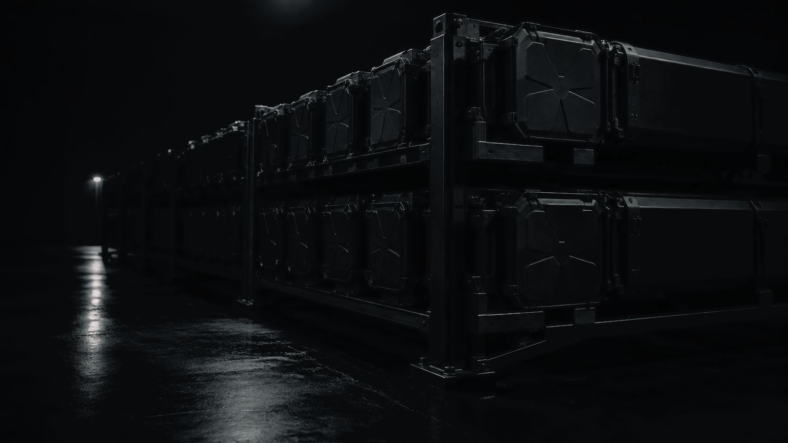

01 / 03
Production
Manufacturability from the start of development
Design, production documentation, and quality requirements are treated as interrelated elements of the product.

The project combines two separate classes of aircraft: the baseline propeller-driven ARROWHEAD and the high-speed SPEAR.
The family is built on a modular design, containerized configuration, standardized electronic components, and a shared technical support infrastructure.
Each line has its own technical requirements, architecture, and test program.
Different technological approaches — a shared engineering foundation
Building specialized unmanned interceptors requires not only developing the aircraft but also organizing production, storage, diagnostics, and maintenance.
ARROWHEAD and SPEAR are treated as separate products united by shared principles of engineering development.
Unified components, digital documentation, and standardized infrastructure make it possible to build a coherent product family without having to fully duplicate development and support processes.
An advanced compact propeller-class unmanned aircraft.
A separate development line for an advanced high-speed aircraft.
SPEAR calls for separate engineering research and its own requirements for the design, test program, and technical support.
At the same time, common standards for digital records and compatible electronic components can be used across the family.
A specialized container module treated as part of the overall product.
The project provides for a unified approach to the storage, transportation, identification, and technical records of equipment.
Each product is planned to come with its own individual digital record.
Development of the family provides for common requirements for process documentation, component quality, and traceability of production processes.
A unified information infrastructure for product records, technical condition monitoring, maintenance logging, and support for hardware configurations.
Manufacturability from the start of development
Design, production documentation, and quality requirements are treated as interrelated elements of the product.
Unified standards for technical records
Container modules and products come with information on their configuration, condition, and maintenance history.
Product cost is more than manufacturing cost
The project assessment takes into account the costs of production, storage, maintenance, technical condition checks, and subsequent support.
Use of shared engineering principles and compatible components wherever the requirements of a specific product allow.
Standardization of documentation, container modules, and technical support procedures.
An individual digital passport with records of hardware revisions, software versions, and maintenance history.
The ability to exchange approved technical and diagnostic data with compatible digital platforms.
ARROWHEAD and SPEAR — two separate lines of one family
ARROWHEAD and SPEAR are being developed as advanced unmanned interceptors under consideration for integration into the SHIELD D container infrastructure.
SHIELD D is a family of containerized launch systems.
AGATA is a unified digital environment for technical records, documentation, and display of approved data.
ECHO is an advanced sensor platform being developed as a separate Darlein Defense line.
Each project keeps its own purpose and architecture, while common standards ensure the coherent development of the technology ecosystem.
Darlein Defense is exploring the creation of ARROWHEAD and SPEAR, a family of specialized unmanned interceptors.
We are interested in collaborating with aviation engineers, electronic component manufacturers, research organizations, and potential customers.
We invite you to discuss technology partnerships, manufacturing cooperation, and joint research.
We reply within two business days.